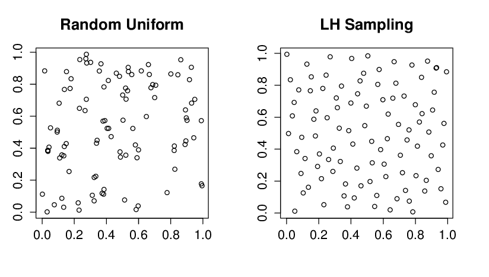
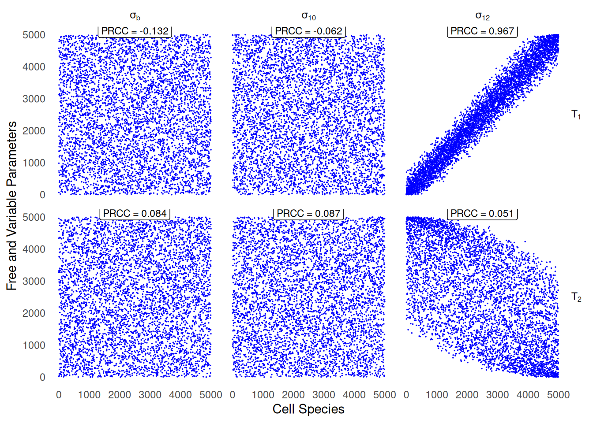

The list of packages required for reproducing the analyses on this script are listed in Listing 1:
Listing 1: Packages required for computing sensitivity analyses.
Code
# remotes::install_github("jpahle/CoRC")library(CoRC)# tidyverse packageslibrary(dplyr)library(ggplot2)# to generate the simulations library(lhs) # Latin Hypercube samplinglibrary(parallel) # parallel computinglibrary(ppcor) # Compute partial correlations# Table reportinglibrary(flextable)
1 Evaluate the sensitivity of immune cells to parameter constants
1.1 Generate the distributions of nine critical parameters
We begin to extract the original constants of the 9 parameters assumed to have the strongest impact on the populations of T cell subsets, using CoRC::getParameters, reported in Table 1:
Code
## Retrieve parameters we want to evaluate the versatility ----healthy_model <-loadModel("../../models/team_2016_final_model_lo2016_2025_05_13.cps")# S2 to be changedparameters_healthy <-getParameters(model = healthy_model,key =c("(Diff of M0 to M1).delta_m_cit","(Diff of M1 to M2).sigma","(Induction of T1 from M).s12","(Proliferation of T1).s2","(Induction of T2).s4","(Induction of T17).s21","(Induction of T17).s6","(Induction of Tr).sb","(Induction of Tr).s10")) |> dplyr::select(-mapping)flextable(parameters_healthy) |>add_footer_row(values ="key is direct ID of the parameter in the model, reaction describes the biological mechanism associated with the value of the parameter, and value returns the constant value assumed for healthy individuals.", colwidths =4) |>bold(part ="header")
key
name
reaction
value
(Diff of M0 to M1).delta_m_cit
delta_m_cit
Diff of M0 to M1
2.40
(Diff of M1 to M2).sigma
sigma
Diff of M1 to M2
24.00
(Induction of T1 from M).s12
s12
Induction of T1 from M
10.93
(Proliferation of T1).s2
s2
Proliferation of T1
1.23
(Induction of T2).s4
s4
Induction of T2
1.94
(Induction of T17).s21
s21
Induction of T17
156.17
(Induction of T17).s6
s6
Induction of T17
156.17
(Induction of Tr).sb
sb
Induction of Tr
14.02
(Induction of Tr).s10
s10
Induction of Tr
14.02
key is direct ID of the parameter in the model, reaction describes the biological mechanism associated with the value of the parameter, and value returns the constant value assumed for healthy individuals.
Table 1: The 9 reaction parameters evaluated for sensitivity analyses.
In Lo et al. (2016), they chose to perform Latin Hypercube Sampling (LHS) against Standard Random Sampling. The differences between these two randomisation approaches are further detailled in Tip 1, but briefly, the major advantage of LHS lies in its better coverage of the whole parameter sampling space, especially with a low number of observations (which is usually the case in boostrap simulations due to their high computing cost).
Tip 1: Standard versus Latin Hypercube Sampling (LHS)
Random sampling and Latin Hypercube Sampling differ in how they distribute the sample points within the parameter space:
In Standard Random Sampling, for a \(d-\) random vector, the random samples are drawn independently within each dimension (or variable):
\[
x_i^{(j)} \sim p_j(x), \quad j = 1, 2, \dots, d, \quad i = 1, 2, \dots, N
\]
where \(x_i^{(j)}\) is the \(i\)-th sample drawn for the \(j\)-th dimension, \(d=9\) (number of parameters evaluated for sensitivity), \(N=5000\) the total number of parameter distributions simulated, and \(p_j\) the probability distribution1. Since each sample is drawn completely at random, it’s quite likely that some regions might be over-sampled while others may have gaps, with a low number of observations drawn (good coverage of the whole sampling space is only guaranteed asymptotically).
In Latin Hypercube Sampling (LHS), the sampling space is first stratified into \(N\) equally probable intervals for each variable \(x^{(j)}\); an independent permutation is subsequently applied across dimensions to avoid correlation. Finally, each sample is drawn from of the \(N-\) defined intervals. LHS then guarantees a more evenly distributed coverage.
To conclude, LHS provides a better Coverage of the Input Space(notably reduces the probability of clustering or missing critical regions), Improved Convergence and Efficiency by achieving a more accurate representation of the underlying distribution and leading to lower variance in estimated statistics with fewer number of avalaible observations (see Figure 1 for further illustration). Yet, only standard random sampling is completely independent and unbiased.

Figure 1: Randomly sampled variables vs. Latin hypercube samples, from Rustell (n.d.). With a low number of observations, the clustering pattern inherent to standard random sampling is clearly showcased.
The code snippet below generates the \(N=5000\) bootstrap distribution of the 9 evaluated parameters for robustness, using Latin Hypercube Sampling. LHS indeed guarantees better coverage of the sampling space.2.
Determine the number of observations, equivalently the number of generated bootstrap distributions (here, \(N=5000\)).
2
Lower and upper bounds are computed within a \(\pm 20\%\) range, centered around the parameter constant.
3
We fix the random seed to ensure reproducibibility of the sensitivity analyses.
4
The core function of the lhs package, lhs::randomLHS(), is only able to perform standard uniform sampling. Two parameters must be provided: the number of observations to derive (here, 5000), and the dimension of the random vector (here, \(9\) parameters are considered).
5
How to generate the uniform distribution for a given parameter \(X_j \sim \mathcal{U}(0.8 \times X_j^0, 1.2 \times X_j^0)\), with \(X_j^0\) the constant value estimated in a healthy individual, from the standard uniform distribution \(U \sim \mathcal{U}(0, 1)\)3. By appling the Inverse Transform Sampling Theorem (see Tip 2), which implies applying the reciprocal of the CDF, in other words, the quantile function which is given in R by the stats::qunif function. Alternatively, we could have reproduced this result by applying the following affine transformation: bootstrap_parameters[,i] * (param_ranges$UB[i] -param_ranges$LB[i]) + param_ranges$LB[i] on the observations simulated wiht a standard uniform.
6
By applying the quantile function, and since the distribution is supposed evenly distributed on the sampling space, we expect the quantiles to be rather close from their theoretical values (for example, both the median and the mean should be close to the real constant parameter values).
Tip 2: The Inverse Transform Sampling Theorem
The Inverse Transform Sampling Theorem allows generating any probability distribution from the standard uniform distribution, \(U \sim \mathcal{U}(0,1)\). Let \(X\) be a continuous random variable with cumulative distribution function (CDF) \(F(x)\) and \(F^{-1}\) its reciprocal (the quantile function), then:
\[
X = F^{-1}(U)
\]
follows the same distribution as \(X\).
In particular, for a uniform distribution \(X \sim \mathcal{U}(a, b)\), \(a\) and \(b\) being respectively the lower and upper bounds, whose CDF is given by: \(F(x) = \frac{x - a}{b - a}, \quad a \leq x \leq b\), then the quantile function is given by \(F^{-1}(u) = a + u(b - a)\).
In other terms, if \(U\) follows the standard uniform distirbution, then, by applying the affine transformation \(X=a + (b - a) U\), \(X\) will follow the \(X \sim \mathcal{U}(a,b)\) distribution.
Generally speaking, the Inverse Transform Sampling allows generating any probability distribution from a uniform \([0,1]\) applying this formula: \(X = F^{-1}(U)\).
bootstrap_parameters is a 5000 simulations times 9 parameters matrix storing all sampled parameter configurations. We displayed below only the first six lines of the simulated parameter distributions:
1.2 Compute steady states for the 5000 simulated parameter variations
We compute the corresponding steady-states for each of the \(N=5000\) simulated parameter configurations. This task is computationally-intensive, but can be easily parallelised, since all bootstrap samples have been generated independently. We use to that end the standard parallel package.
Use detectCores() to determine the number of available CPU cores; conditionned to that number (usually 8 or 16 on recent personal laptop configurations); use makeCluster() to create the corresponding cluster4.
2
Use clusterExport() to send current session variables to workers, and clusterEvalQ() to load required libraries and/or execute code prior to the parallelised computations. Both functions ensure that the cluster environement has the required modules to start the computation.
3
The Parallel Processing parLapply() is the counterpart of the sequential lapply() function. The first argument cl is the cluster definition. For each parameter configuration among the \(N=5000\), we modifify the original ODE model to reflect the LHS parameter configuration, then, compute the modified steady-states associated with that change of parameter configuration. Finally, we return for each parameter configuration a dataset with the modified 15 steady-state concentrations and the corresponding 9 parameter configurations.
4
The chunk.size option controls how data is divided among workers Once computed, another batch of 50 parameter configurations is processed).
5
This line is required, as CoRC uses copy by reference rather than by value. If we had just assigned the loaded healthy ODE model to the modified sensitivity model, sensitivity_model <- healthy_model, every modification on sensitivity_model would also be reported on healthy_model5.
6
The output of parLapply is a list of data.frame, function dplyr::bind_rows() concatenates them in a single large dataset.
7
Stop the cluster using stopCluster() to free computational resources when no longer need.
1.3 Compute partial correlation scores
To compute the correlations between variations of the constant parameters, and the concentrations of the species at steady state, Lo et al. (2016) chose to apply a rank-transformation first, which guarantees increased robustness to outliers, and reduces scaling issues associated with significant variations of orders of magnitude between the parameters.
Then, instead on relying on standard Pearson correlation which may yield spurious relationships between outcomes and parameter variations, Lo et al. (2016) computes the Partial Correlation score between the rank-transformed variations of species of interest, and the simulated parameter distributions (see Important 1 for details).
The pcor::ppcor function returns both:
estimate, the symmetric matrix of the partial correlation coefficient between two variables (included between -1 and 1, the sign providing the type of correlation, and the absolute value the magnitude or strenght of the direct relationship)
p.value, a matrix of the \(p-\) values for each of the tests.
As in Lo et al. (2016), the threshold for significance was set to \(0.01\).
The resulting PRCC scores between T1 and T2 immune subpopulations with the 9 parameters tested for sensitivity are reported in Table 2:
Code
prcc_sensitivity <-pcor(sensitivity_outputs)prcc_estimate <- prcc_sensitivity$estimate |> tibble::as_tibble(mat, rownames ="species") |> dplyr::select (species, T1, T2) |>filter(!species %in%c("T1", "T2")) |># Join on the same dataset pvalues and PRCC estimations.inner_join(prcc_sensitivity$p.value |> tibble::as_tibble(mat, rownames ="species") |> dplyr::select (species, T1, T2) |>filter(!species %in%c("T1", "T2")), by ="species",suffix =c("", ".pval")) |>mutate(T1 =if_else(T1.pval <=0.01, sprintf("%.3f*", T1), sprintf("%.3f", T1)),T2 =if_else(T2.pval <=0.01, sprintf("%.3f*", T2), sprintf("%.3f", T2))) |> dplyr::select(-T1.pval, -T2.pval)### Format PRCC tableflextable(prcc_estimate) |>add_footer_row(values ="* denotes significant PRCC with p-value below 0.01.", colwidths =3) |>compose(j ="species",value =as_paragraph(as_equation(c("\\sigma_{M_{\\alpha}}", "\\sigma_{M_{10}}","\\sigma_{12}", "\\sigma_{2}", "\\sigma_{4}","\\sigma_{21}", "\\sigma_{6}", "\\sigma_{\\beta}", "\\sigma_{10}")))) |>set_header_labels(values =list(species ="", T1 ="PRCC for T1", T2 ="PRCC for T2")) |>align(align ="center", part ="all") |>set_caption("Table 5: PRCC values for key parameters playing on T1 and T2 variations.")
PRCC for T1
PRCC for T2
NA
0.918*
0.364*
NA
-0.351*
0.429*
NA
0.967*
0.051*
NA
0.876*
0.024
NA
-0.067*
0.920*
NA
-0.007
0.019
NA
0.021
-0.007
NA
-0.132*
0.084*
NA
-0.062*
0.087*
* denotes significant PRCC with p-value below 0.01.
Table 2: PRCC values of the 9 parameters benchmarked for robustness against steady-state concentrations of \(T_1\) and \(T_2\) immune cell subtypes. Reproduction of Table 5 in Lo et al. (2016).
Important 1: Pearson Correlation and Partial Correlation
The standard Pearson correlation coefficient between two variables \(X\) and \(Y\) is given by Equation 1:
where:
- \(\text{Cov}(X, Y) = \mathbb{E}[(X - \mu_X)(Y - \mu_Y)]\) is the covariance.
- \(\sigma_X = \sqrt{\text{Var}(X)}\) and \(\sigma_Y = \sqrt{\text{Var}(Y)}\) are the variable standard deviations.
It measures the linear relationship between \(X\) and \(Y\), but does not control the effect of potential colliders or confounding variables.
On the other hand, the Partial Correlation measures the relationship between two variables while controlling for the effect of a the remaining set of variables. In a multi-dimensional framework, it’s given by Equation 2:
where \(\mathbf{\Omega} = \mathbf{\Sigma}^{-1}\) is the precision matrix (inverse of the covariance matrix).
Compared to standard correlations, it removes indirect Relationships triggered by another set of confusing variables\(\mathbf{Z}\), thus isolates the direct relationship between \(X\) and \(Y\), and enables more straightforward interpretation by revealing truly causal relationships. For example, in Figure 2, using simply the Pearson correlation, we would have certainly observed a significant correlation between variables \(A\) and \(C\). On the other hand, with partial correlation, the spurious connection between \(A\) and \(C\) due to the confusing effect of \(B\) would certainly has been faded out.
Code
digraphG{layout=neatoA->B;B->C;}
Figure 2: Simple example of chain rule associations.
1.4 Plot rank-transformed datasets
Code
sensitivity_outputs_formatted <- sensitivity_outputs |># tidy format: one column storing PRCC values for the x-axis, one for the y-axis, and another for the facets dplyr::select (c("T1", "T2", "sb", "s10", "s12")) |> tidyr::pivot_longer(cols =c("sb", "s10", "s12"), names_to ="parameters", values_to ="x") |> tidyr::pivot_longer(cols =c("T1", "T2"), names_to ="species", values_to ="y") |># provide the same order of facets for direct comparison dplyr::mutate(parameters =factor(parameters, levels =c("sb", "s10", "s12"),labels =c("sigma[b]", "sigma[10]", "sigma[12]"),ordered =TRUE),species =factor(species, levels =c("T1", "T2"),labels =c("T[1]","T[2]")))# Subtitles customised for each facet, including the p-value.prcc_values <- prcc_sensitivity$estimateprcc_sensitivity_annot <-data.frame(x=n_samples/2, y=Inf, lab=factor(paste("PRCC =", c(prcc_values["T1", "sb"], prcc_values["T1", "s10"], prcc_values["T1", "s12"], prcc_values["T2", "sb"], prcc_values["T2", "s10"], prcc_values["T2", "s12"]) |>sprintf(fmt ='%.3f')), ordered =TRUE), parameters=factor(rep(c("sigma[b]", "sigma[10]", "sigma[12]"), 2), ordered =TRUE),species=factor(c(rep("T[1]", 3), rep("T[2]", 3)), ordered =TRUE))
We generate a scatter plot after applying rank-transformation of \(T_1\) and \(T_2\) immune cells subsets, against 3 parameters playing a critical role on the viability of cell pools, namely \(\sigma_b\), \(\sigma_{10}\) and \(\sigma_{12}\), the first two controlling the activation rate of Tregs, and the induction of \(T_1\) by the global pool of macrophages (including both \(M1\) and \(M2\) types)6.
Code
SS_plots <-ggplot(sensitivity_outputs_formatted, aes(y = y, x=x)) +geom_point(size =0.1, col ="blue", shape =20) +# The labeller trick enables to use Latex notations for the subtitles of facets.facet_grid(species ~ parameters, labeller =labeller(.rows = label_parsed, .cols = label_parsed)) +geom_label(aes(x, y, label=lab),data=prcc_sensitivity_annot, vjust=0.8, size =3) +xlab("Cell Species") +ylab("Free and Variable Parameters") +# Guarantees minimal plot background that would hinder visibility of the output.theme_minimal() +theme(panel.grid.major =element_blank(), panel.grid.minor =element_blank(),strip.text.y =element_text(angle =0)) SS_plots

Figure 3: Scatter plots of rank-transformed\(T_1\) and \(T_2\) against 3 parameters enumerated in Table 2, exhbiting both strong partial correlation (\(|\text{PRCC}|>0.5\) and \(p-\)value \(<0.01\)). Reproduction of (Lo et al. 2016, 11), Fig.2.
One of the major advantages of the ggplot2 package lies in its seamless ability to save the graphical object in a variety of formats, including pdf and png, as illustrated in Listing 2:
Listing 2: Code snippet not run, used for illustration example.
Code
# output is pdf, with a high resolution close to retina visual discrimination abilityggsave(filename ="../../results/Fig2_PRCC.pdf", plot = SS_plots, dpi =600, width =20, height =10,units ="cm")
Lo, Wing-Cheong, Violeta Arsenescu, Razvan I. Arsenescu, and Avner Friedman. 2016. “Inflammatory Bowel Disease: How Effective Is TNF-α Suppression?”PloS One 11 (11): e0165782. https://doi.org/10.1371/journal.pone.0165782.
Only the uniform sampling, \(U_i \sim \mathcal{U}(0,1)\), is provided with the LHSpackage. We detailed in Tip 2 how to simulate any kind of probability distribution from the standard uniform distribution.↩︎
Note however that both standard random sampling and LHS assume independence between the parameters values, a strong and quite unlikely biological premise.↩︎
Note that we assume independence between the parameters, and that the quantile call is performed independenly for each of the dimensions.↩︎
With 8 cores, for instance, 8 computations can be performed in parallel. It might be advised to free completely a CPU to avoid computer freezing↩︎
Another way to visualise the copy by reference approach: simply copy the ODE model in another variable healthy_model_copy <- healthy_model in the R canonical way. Compare the storage addresses: lobstr::obj_addr(healthy_model) and lobstr::obj_addr(healthy_model_copy); you will note that they are identical↩︎
Note that we don’t round the PRCC values, but only format them to display 3 significant digits using the native C sprintf(): difference between both approaches is notably crucial when saving datasets to avoid loss of nuemrical precision↩︎
Source Code
---title: "Sensitivity analyses"format: html---The list of packages required for reproducing the analyses on this script are listed in @lst-setup-sensitivity-analyses: ```{r setup-prcc}#| lst-label: lst-setup-sensitivity-analyses#| lst-cap: Packages required for computing sensitivity analyses. # remotes::install_github("jpahle/CoRC")library(CoRC)# tidyverse packageslibrary(dplyr)library(ggplot2)# to generate the simulations library(lhs) # Latin Hypercube samplinglibrary(parallel) # parallel computinglibrary(ppcor) # Compute partial correlations# Table reportinglibrary(flextable)```## Evaluate the sensitivity of immune cells to parameter constants### Generate the distributions of nine critical parameters We begin to extract the original constants of the 9 parameters assumed to have the strongest impact on the populations of T cell subsets, using `CoRC::getParameters`, reported in @tbl-healthy-parameters: ```{r}#| label: tbl-healthy-parameters#| tbl-cap: The 9 reaction parameters evaluated for **sensitivity analyses**. ## Retrieve parameters we want to evaluate the versatility ----healthy_model <-loadModel("../../models/team_2016_final_model_lo2016_2025_05_13.cps")# S2 to be changedparameters_healthy <-getParameters(model = healthy_model,key =c("(Diff of M0 to M1).delta_m_cit","(Diff of M1 to M2).sigma","(Induction of T1 from M).s12","(Proliferation of T1).s2","(Induction of T2).s4","(Induction of T17).s21","(Induction of T17).s6","(Induction of Tr).sb","(Induction of Tr).s10")) |> dplyr::select(-mapping)flextable(parameters_healthy) |>add_footer_row(values ="key is direct ID of the parameter in the model, reaction describes the biological mechanism associated with the value of the parameter, and value returns the constant value assumed for healthy individuals.", colwidths =4) |>bold(part ="header") ```In @lo2016po, they chose to perform **Latin Hypercube Sampling (LHS)** against **Standard Random Sampling**. The differences between these two randomisation approaches are further detailled in @tip-LHS, but briefly, the major advantage of LHS lies in its better coverage of the whole parameter sampling space, especially with a low number of observations (which is usually the case in boostrap simulations due to their high computing cost). ::: {#tip-LHS .callout-tip collapse="true" title="Standard versus Latin Hypercube Sampling (LHS)"}Random sampling and Latin Hypercube Sampling differ in how they distribute the sample points within the parameter space:---In **Standard Random Sampling**, for a $d-$ random vector, the random samples are drawn independently within each dimension (or variable): $$x_i^{(j)} \sim p_j(x), \quad j = 1, 2, \dots, d, \quad i = 1, 2, \dots, N$$where $x_i^{(j)}$ is the $i$-th sample drawn for the $j$-th dimension, $d=9$ (number of parameters evaluated for sensitivity), $N=5000$ the total number of parameter distributions simulated, and $p_j$ the probability distribution^[Only the uniform sampling, $U_i \sim \mathcal{U}(0,1)$, is provided with the `LHS`package. We detailed in @tip-ITST how to simulate any kind of probability distribution from the standard uniform distribution.].Since each sample is drawn completely at random, it's quite likely that some regions might be over-sampled while others may have gaps, with a low number of observations drawn (good coverage of the whole sampling space is only guaranteed asymptotically).--- In **Latin Hypercube Sampling (LHS)**, the sampling space is first stratified into $N$ equally probable intervals for each variable $x^{(j)}$; an independent permutation is subsequently applied across dimensions to avoid correlation. Finally, each sample is drawn from of the $N-$ defined intervals.LHS then guarantees a more evenly distributed coverage.---To conclude, LHS provides a **better Coverage of the Input Space**(notably reduces the probability of clustering or missing critical regions), **Improved Convergence and Efficiency** by achieving a more accurate representation of the underlying distribution and leading to lower variance in estimated statistics with fewer number of avalaible observations (see @fig-LHS for further illustration). Yet, only standard random sampling is completely independent and unbiased. . With a low number of observations, the **clustering pattern** inherent to standard random sampling is clearly showcased.](../assets/img/Randomly-sampled-variables-vs-Latin-hypercube-samples.png){#fig-LHS}:::The code snippet below generates the $N=5000$ bootstrap distribution of the 9 evaluated parameters for robustness, using **Latin Hypercube Sampling**. LHS indeed guarantees better coverage of the *sampling space*.^[Note however that both standard random sampling and LHS assume independence between the parameters values, a strong and quite unlikely biological premise.].```{r}#| label: lhs-generationn_samples <-5000# Lower and upper bounds are computed within a ±20% range centered around the assumed parameter constant.parameters_sensitivity <- parameters_healthy$valueparam_ranges <- tibble::tibble(parameters_name = parameters_healthy$key, LB= parameters_sensitivity *0.8,UB = parameters_sensitivity *1.2)set.seed(20) bootstrap_parameters <-randomLHS(n_samples, length(parameters_sensitivity))for (i inseq_along(parameters_sensitivity)) { bootstrap_parameters[,i] <-qunif(bootstrap_parameters[,i], param_ranges$LB[i], param_ranges$UB[i])}colnames(bootstrap_parameters) <- parameters_healthy$nameapply(bootstrap_parameters,2, quantile)``````rn_samples <-5000# <1>parameters_sensitivity <- parameters_healthy$valueparam_ranges <- tibble::tibble(parameters_name = parameters_healthy$key, # <2>LB= parameters_sensitivity *0.8, # <2>UB = parameters_sensitivity *1.2) # <2>set.seed(20) # <3>bootstrap_parameters <-randomLHS(n_samples, length(parameters_sensitivity)) # <4># for (i inseq_along(parameters_sensitivity)) { # <5> bootstrap_parameters[,i] <-qunif(bootstrap_parameters[,i], # <5> param_ranges$LB[i], # <5> param_ranges$UB[i]) # <5>} # <5>colnames(bootstrap_parameters) <- parameters_healthy$nameapply(bootstrap_parameters,2, quantile) # <6>```1. Determine the number of observations, equivalently the number of generated bootstrap distributions (here, $N=5000$).2. Lower and upper bounds are computed within a $\pm 20\%$ range, centered around the parameter constant.3. We fix the **random seed** to ensure reproducibibility of the sensitivity analyses.4. The core function of the `lhs` package, `lhs::randomLHS()`, is only able to perform standard uniform sampling. Two parameters must be provided: the number of observations to derive (here, 5000), and the dimension of the random vector (here, $9$ parameters are considered).5. How to generate the uniform distribution for a given parameter $X_j \sim \mathcal{U}(0.8 \times X_j^0, 1.2 \times X_j^0)$, with $X_j^0$ the constant value estimated in a healthy individual, from the standard uniform distribution $U \sim \mathcal{U}(0, 1)$^[Note that we assume independence between the parameters, and that the *quantile call* is performed independenly for each of the dimensions.]. By appling the **Inverse Transform Sampling Theorem** (see @tip-ITST), which implies applying the reciprocal of the CDF, in other words, the *quantile function* which is given in R by the `stats::qunif` function. Alternatively, we could have reproduced this result by applying the following affine transformation: `bootstrap_parameters[,i] * (param_ranges$UB[i] -param_ranges$LB[i]) + param_ranges$LB[i]` on the observations simulated wiht a standard uniform. 6. By applying the `quantile` function, and since the distribution is supposed evenly distributed on the sampling space, we expect the quantiles to be rather close from their theoretical values (for example, both the median and the mean should be close to the real constant parameter values).::: {#tip-ITST .callout-tip collapse="true" title="The Inverse Transform Sampling Theorem"}The **Inverse Transform Sampling Theorem** allows generating any probability distribution from the **standard uniform distribution**, $U \sim \mathcal{U}(0,1)$. Let $X$ be a continuous random variable with *cumulative distribution function* (CDF) $F(x)$ and $F^{-1}$ its reciprocal (the quantile function), then:$$X = F^{-1}(U)$$follows the same distribution as $X$.---In particular, for a uniform distribution $X \sim \mathcal{U}(a, b)$, $a$ and $b$ being respectively the lower and upper bounds, whose CDF is given by: $F(x) = \frac{x - a}{b - a}, \quad a \leq x \leq b$, then the *quantile* function is given by $F^{-1}(u) = a + u(b - a)$. In other terms, if $U$ follows the standard uniform distirbution, then, by applying the **affine** transformation $X=a + (b - a) U$, $X$ will follow the $X \sim \mathcal{U}(a,b)$ distribution. Generally speaking, the **Inverse Transform Sampling** allows generating any probability distribution from a uniform $[0,1]$ applying this formula: $X = F^{-1}(U)$.:::`bootstrap_parameters` is a 5000 simulations times 9 parameters matrix storing all sampled parameter configurations. We displayed below only the first six lines of the simulated parameter distributions:```{r bootstrap-parameters}#| echo: false head(bootstrap_parameters)```### Compute steady states for the 5000 simulated parameter variationsWe compute the corresponding steady-states for each of the $N=5000$ simulated parameter configurations. This task is computationally-intensive, but can be easily parallelised, since all bootstrap samples have been generated independently. We use to that end the standard `parallel` package.```rcl <-makeCluster(detectCores()) # <1>clusterExport(cl, varlist =c("parameters_healthy", "bootstrap_parameters")) # <2>cluster_environments <-clusterEvalQ(cl, { # <2>library(CoRC) # <2>library(dplyr, quietly =TRUE) # <2> healthy_model <-loadModel("./models/team_2016_final_model_lo2016.cps") # <2>}) # <2>sensitivity_outputs <-parLapply(cl = cl, # <3>X =1:n_samples, # <3>f =function (i) { # <3> sensitivity_model <- healthy_model |>saveModelToString() |>loadModelFromString() # <5>setParameters(model = sensitivity_model, # <3>key = parameters_healthy$key, # <3>value = bootstrap_parameters[i,]) # <3> sensitivity_model_steady_state <-runSteadyState( # <3>model = sensitivity_model # <3> )$species # <3> SS_concentrations <-setNames(sensitivity_model_steady_state$concentration, # <3> sensitivity_model_steady_state$name) |># <3>as.list() |>as.data.frame() |># <3> dplyr::bind_cols(bootstrap_parameters[i, ,drop=FALSE] |># <3>as.data.frame()) # <3>return(SS_concentrations) # <3> } , chunk.size =50) |># <4> dplyr::bind_rows() # <6>stopCluster(cl) # <7>```1. Use `detectCores()` to determine the number of available CPU cores; conditionned to that number (usually 8 or 16 on recent personal laptop configurations); use `makeCluster()` to create the corresponding cluster^[With 8 cores, for instance, 8 computations can be performed in parallel. It might be advised to free completely a CPU to avoid computer freezing].2. Use `clusterExport()` to send current session variables to workers, and `clusterEvalQ()` to load required libraries and/or execute code prior to the parallelised computations. Both functions ensure that the cluster environement has the required modules to start the computation. 3. The Parallel Processing `parLapply()` is the counterpart of the sequential `lapply()` function. The first argument `cl` is the cluster definition. For each parameter configuration among the $N=5000$, we modifify the original ODE model to reflect the LHS parameter configuration, then, compute the modified steady-states associated with that change of parameter configuration. Finally, we return for each parameter configuration a dataset with the modified 15 steady-state concentrations and the corresponding 9 parameter configurations. 4. The `chunk.size` option controls how data is divided among workers Once computed, another batch of 50 parameter configurations is processed).5. This line is required, as `CoRC` uses copy by *reference* rather than by *value*. If we had just assigned the loaded healthy ODE model to the modified sensitivity model, `sensitivity_model <- healthy_model`, every modification on `sensitivity_model` would also be reported on `healthy_model`^[Another way to visualise the **copy by reference** approach: simply copy the ODE model in another variable `healthy_model_copy <- healthy_model` in the R canonical way. Compare the storage addresses: `lobstr::obj_addr(healthy_model)` and `lobstr::obj_addr(healthy_model_copy)`; you will note that they are identical].6. The output of `parLapply` is a list of `data.frame`, function `dplyr::bind_rows()` concatenates them in a single large dataset.7. Stop the cluster using `stopCluster()` to free computational resources when no longer need.### Compute partial correlation scoresTo compute the correlations between variations of the constant parameters, and the concentrations of the species at steady state, @lo2016po chose to apply a *rank-transformation* first, which guarantees increased robustness to outliers, and reduces *scaling issues* associated with significant variations of orders of magnitude between the parameters.```{r rank-transformation}# reshape and rank-transform sensitivity outputssensitivity_outputs <- readr::read_csv("../../results/sensitivity_outputs.csv") |> dplyr::mutate(across(where(is.numeric), rank)) ```Then, instead on relying on standard Pearson correlation which may yield spurious relationships between outcomes and parameter variations, @lo2016po computes the **Partial Correlation** score between the rank-transformed variations of species of interest, and the simulated parameter distributions (see @imp-prcc for details). The `pcor::ppcor` function returns both:- `estimate`, the symmetric matrix of the partial correlation coefficient between two variables (included between -1 and 1, the sign providing the type of correlation, and the absolute value the magnitude or strenght of the direct relationship)- `p.value`, a matrix of the $p-$ values for each of the tests. - As in @lo2016po, the threshold for *significance* was set to $0.01$.The resulting PRCC scores between T1 and T2 immune subpopulations with the 9 parameters tested for sensitivity are reported in @tbl-pcor-computation:```{r}#| label: tbl-pcor-computation#| tbl-cap: PRCC values of the 9 parameters benchmarked for **robustness** against steady-state concentrations of $T_1$ and $T_2$ immune cell subtypes. Reproduction of Table 5 in @lo2016po. prcc_sensitivity <-pcor(sensitivity_outputs)prcc_estimate <- prcc_sensitivity$estimate |> tibble::as_tibble(mat, rownames ="species") |> dplyr::select (species, T1, T2) |>filter(!species %in%c("T1", "T2")) |># Join on the same dataset pvalues and PRCC estimations.inner_join(prcc_sensitivity$p.value |> tibble::as_tibble(mat, rownames ="species") |> dplyr::select (species, T1, T2) |>filter(!species %in%c("T1", "T2")), by ="species",suffix =c("", ".pval")) |>mutate(T1 =if_else(T1.pval <=0.01, sprintf("%.3f*", T1), sprintf("%.3f", T1)),T2 =if_else(T2.pval <=0.01, sprintf("%.3f*", T2), sprintf("%.3f", T2))) |> dplyr::select(-T1.pval, -T2.pval)### Format PRCC tableflextable(prcc_estimate) |>add_footer_row(values ="* denotes significant PRCC with p-value below 0.01.", colwidths =3) |>compose(j ="species",value =as_paragraph(as_equation(c("\\sigma_{M_{\\alpha}}", "\\sigma_{M_{10}}","\\sigma_{12}", "\\sigma_{2}", "\\sigma_{4}","\\sigma_{21}", "\\sigma_{6}", "\\sigma_{\\beta}", "\\sigma_{10}")))) |>set_header_labels(values =list(species ="", T1 ="PRCC for T1", T2 ="PRCC for T2")) |>align(align ="center", part ="all") |>set_caption("Table 5: PRCC values for key parameters playing on T1 and T2 variations.") ```::: {#imp-prcc .callout-important collapse="true" title="Pearson Correlation and Partial Correlation"}The standard **Pearson correlation** coefficient between two variables $X$ and $Y$ is given by @eq-pearson-correlation: $$\rho_{X,Y} = \frac{\text{Cov}(X, Y)}{\sigma_X \sigma_Y}$${#eq-pearson-correlation}where: - $\text{Cov}(X, Y) = \mathbb{E}[(X - \mu_X)(Y - \mu_Y)]$ is the covariance. - $\sigma_X = \sqrt{\text{Var}(X)}$ and $\sigma_Y = \sqrt{\text{Var}(Y)}$ are the variable standard deviations. It measures the **linear relationship** between $X$ and $Y$, but does not control the effect of potential colliders or confounding variables.---On the other hand, the *Partial Correlation* measures the relationship between two variables while **controlling for** the effect of a the remaining set of variables. In a multi-dimensional framework, it's given by @eq-partial-correlation:$$\rho_{X,Y \mid \mathbf{Z}} = -\frac{\Omega_{X,Y}}{\sqrt{\Omega_{X,X} \Omega_{Y,Y}}}$${#eq-partial-correlation}where $\mathbf{\Omega} = \mathbf{\Sigma}^{-1}$ is the **precision matrix** (inverse of the covariance matrix). ---Compared to standard correlations, it removes indirect Relationships triggered by another set of confusing **variables** $\mathbf{Z}$, thus isolates the **direct** relationship between $X$ and $Y$, and enables more straightforward interpretation by revealing truly causal relationships. For example, in @fig-prcc-illustration, using simply the Pearson correlation, we would have certainly observed a significant correlation between variables $A$ and $C$. On the other hand, with partial correlation, the spurious connection between $A$ and $C$ due to the confusing effect of $B$ would certainly has been faded out. ```{dot}//| label: fig-prcc-illustration//| fig-cap: "Simple example of **chain rule** associations."digraphG{layout=neatoA->B;B->C;}```:::### Plot rank-transformed datasets```{r format-sensitivity-ggplot}sensitivity_outputs_formatted <- sensitivity_outputs |># tidy format: one column storing PRCC values for the x-axis, one for the y-axis, and another for the facets dplyr::select (c("T1", "T2", "sb", "s10", "s12")) |> tidyr::pivot_longer(cols =c("sb", "s10", "s12"), names_to ="parameters", values_to ="x") |> tidyr::pivot_longer(cols =c("T1", "T2"), names_to ="species", values_to ="y") |># provide the same order of facets for direct comparison dplyr::mutate(parameters =factor(parameters, levels =c("sb", "s10", "s12"),labels =c("sigma[b]", "sigma[10]", "sigma[12]"),ordered =TRUE),species =factor(species, levels =c("T1", "T2"),labels =c("T[1]","T[2]")))# Subtitles customised for each facet, including the p-value.prcc_values <- prcc_sensitivity$estimateprcc_sensitivity_annot <-data.frame(x=n_samples/2, y=Inf, lab=factor(paste("PRCC =", c(prcc_values["T1", "sb"], prcc_values["T1", "s10"], prcc_values["T1", "s12"], prcc_values["T2", "sb"], prcc_values["T2", "s10"], prcc_values["T2", "s12"]) |>sprintf(fmt ='%.3f')), ordered =TRUE), parameters=factor(rep(c("sigma[b]", "sigma[10]", "sigma[12]"), 2), ordered =TRUE),species=factor(c(rep("T[1]", 3), rep("T[2]", 3)), ordered =TRUE))```We generate a scatter plot after applying rank-transformation of $T_1$ and $T_2$ immune cells subsets, against 3 parameters playing a critical role on the viability of cell pools, namely $\sigma_b$, $\sigma_{10}$ and $\sigma_{12}$, the first two controlling the activation rate of Tregs, and the induction of $T_1$ by the global pool of macrophages (including both $M1$ and $M2$ types)^[Note that we don't round the PRCC values, but only format them to display 3 significant digits using the native C `sprintf()`: difference between both approaches is notably crucial when saving datasets to avoid loss of nuemrical precision].```{r}#| label: fig-sensitivity-plots#| fig-cap: Scatter plots of *rank-transformed* $T_1$ and $T_2$ against 3 parameters enumerated in @tbl-pcor-computation, exhbiting both strong partial correlation ($|\text{PRCC}|>0.5$ and $p-$value $<0.01$). Reproduction of [@lo2016po, pp. 11], Fig.2. SS_plots <-ggplot(sensitivity_outputs_formatted, aes(y = y, x=x)) +geom_point(size =0.1, col ="blue", shape =20) +# The labeller trick enables to use Latex notations for the subtitles of facets.facet_grid(species ~ parameters, labeller =labeller(.rows = label_parsed, .cols = label_parsed)) +geom_label(aes(x, y, label=lab),data=prcc_sensitivity_annot, vjust=0.8, size =3) +xlab("Cell Species") +ylab("Free and Variable Parameters") +# Guarantees minimal plot background that would hinder visibility of the output.theme_minimal() +theme(panel.grid.major =element_blank(), panel.grid.minor =element_blank(),strip.text.y =element_text(angle =0)) SS_plots```One of the major advantages of the `ggplot2` package lies in its seamless ability to save the graphical object in a variety of formats, including `pdf` and `png`, as illustrated in @lst-ggplot-save: ```{r ggplot2-illustration}#| lst-label: lst-ggplot-save#| lst-cap: Code snippet not run, used for illustration example. #| eval: false# output is pdf, with a high resolution close to retina visual discrimination abilityggsave(filename ="../../results/Fig2_PRCC.pdf", plot = SS_plots, dpi =600, width =20, height =10,units ="cm")```